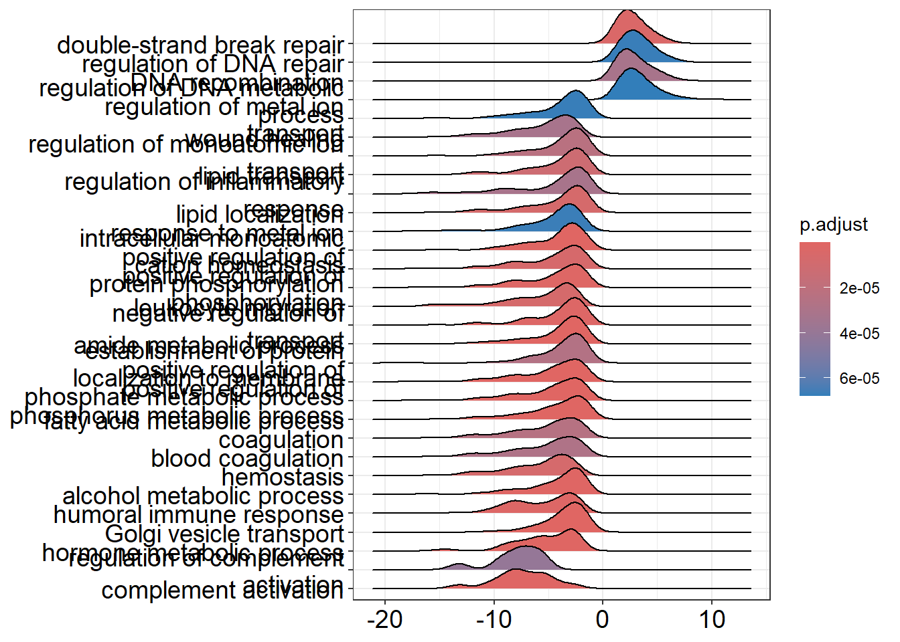
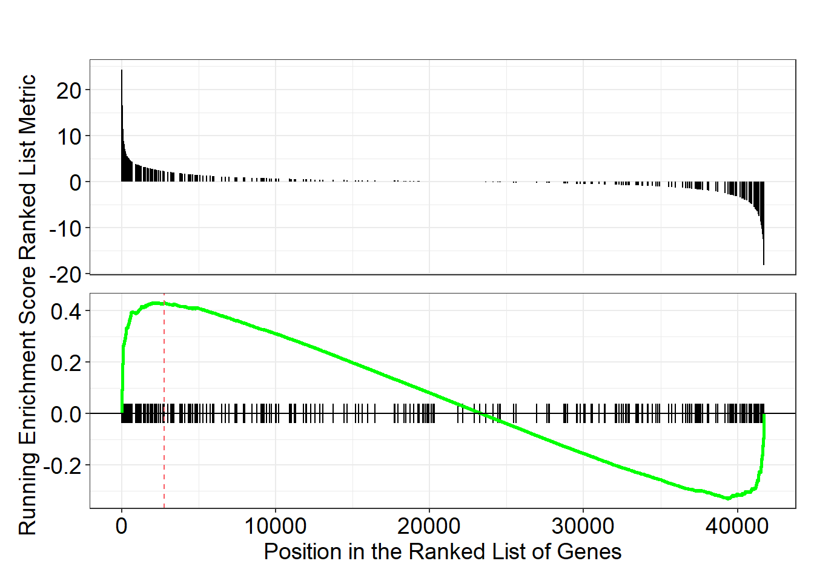

source("https://raw.githubusercontent.com/markdunning/markdunning.github.com/refs/heads/master/files/training/bulk_rnaseq/install_bioc_packages.R")Introduction to RNA-Seq - Part 3
Overview
Further exploration of differential expression, followed by identifcation of biological pathways of interest
Quick Start
This section follows on from Part 1 and Part 2 where we saw how to import raw RNA-seq counts into DESeq2, perform some quality assessment and then differential expression. Several packages are required, which can be downloaded with this code:-
The following will also assume you have created a DESeq2 object in a folder called Robjects in your working directory. This can be downloaded with the following.
dir.create("Robjects/",showWarnings = FALSE)
download.file("https://github.com/markdunning/markdunning.github.com/raw/refs/heads/master/files/training/bulk_rnaseq/dds.rds",destfile = "Robjects/dds.rds")Differential expression with DESeq2
In Part 2 we dissected the DESeq workflow for differential expression in some detail. We also created a data frame for “annotating” the results with biological identifiers that are more recognisable.
library(org.Hs.eg.db)
anno <- AnnotationDbi::select(org.Hs.eg.db,keys=rownames(dds),
columns=c("SYMBOL","GENENAME"),
keytype="ENSEMBL")
# Have a look at the annotation
head(anno) ENSEMBL SYMBOL
1 ENSG00000000003 TSPAN6
2 ENSG00000000005 TNMD
3 ENSG00000000419 DPM1
4 ENSG00000000457 SCYL3
5 ENSG00000000460 FIRRM
6 ENSG00000000938 FGR
GENENAME
1 tetraspanin 6
2 tenomodulin
3 dolichyl-phosphate mannosyltransferase subunit 1, catalytic
4 SCY1 like pseudokinase 3
5 FIGNL1 interacting regulator of recombination and mitosis
6 FGR proto-oncogene, Src family tyrosine kinaseThe code to perform differential expression and incorporate the annotations is given below.
library(DESeq2)
library(dplyr)
library(ggplot2)
de_condition <- DESeq(dds)
results_annotated <- results(de_condition,
contrast = c("condition", "TGF", "CTR"),
tidy = TRUE) %>%
left_join(anno, by = c("row" = "ENSEMBL")) %>%
filter(!duplicated(row)) %>%
arrange(padj) %>%
## removing the lfcSE column
dplyr::select(-lfcSE)
results_annotated %>%
slice_head(n = 10) row baseMean log2FoldChange stat pvalue
1 ENSG00000119681 6471.7058 2.372065 33.52033 2.437260e-246
2 ENSG00000120708 22001.6982 1.436637 24.33084 9.248277e-131
3 ENSG00000172061 1481.6147 2.384971 24.22883 1.105455e-129
4 ENSG00000049540 932.0366 3.999465 22.78006 7.228861e-115
5 ENSG00000060718 1512.0092 2.123432 22.27506 6.448803e-110
6 ENSG00000115414 683348.5240 1.453310 21.16109 2.181368e-99
7 ENSG00000187498 30609.2525 1.458950 21.06196 1.776880e-98
8 ENSG00000186340 14380.2024 1.468632 20.98136 9.707600e-98
9 ENSG00000087245 51862.2917 1.282562 19.39194 9.026914e-84
10 ENSG00000139211 2302.3470 2.070441 18.99119 2.017183e-80
padj SYMBOL
1 4.371957e-242 LTBP2
2 8.294780e-127 TGFBI
3 6.609883e-126 LRRC15
4 3.241783e-111 ELN
5 2.313573e-106 COL11A1
6 6.521564e-96 FN1
7 4.553383e-95 COL4A1
8 2.176687e-94 THBS2
9 1.799164e-80 MMP2
10 3.618422e-77 AMIGO2
GENENAME
1 latent transforming growth factor beta binding protein 2
2 transforming growth factor beta induced
3 leucine rich repeat containing 15
4 elastin
5 collagen type XI alpha 1 chain
6 fibronectin 1
7 collagen type IV alpha 1 chain
8 thrombospondin 2
9 matrix metallopeptidase 2
10 adhesion molecule with Ig like domain 2Filtering the differential expression results
The results_annotated tibble contains results for all the genes that appeared in our counts data, which could be many 10,000s of potential candidates for being biologically meaningful. Deciding which genes to take forward for further investigation can be quite subtle, and can depend on what your question of interest is. With the simplest criteria applied (e.g. an adjusted p-value of 0.05) you can still be faced with 1000s of genes to interpret. Of course, there are methods for identifying biological themes (see later).
The padj and log2FoldChange in the results table are common quantities for filtering representing the statistical certainty and effect size respectively. In an ideal world, genes of interest should have a high degree of statistical certainty (extremely low p-value) and large effect size. We can be reasonably confident about the p-value adjustments that DESeq2 performed, and we will discuss the log2FoldChange later.
At the moment we have almost 5,000 genes with an arbitrary 0.05 cutoff, but not all of them are going to be relevant to our question.
dplyr::count(results_annotated, padj <0.05) padj < 0.05 n
1 FALSE 13039
2 TRUE 4899
3 NA 39976But wait, we also have some NA values. What’s the deal with those?
Why are some adjusted p-values “NA”?
DESeq2 has already done some processing on the results to exclude genes with low expression level across the dataset that it deems to be unreliable and unlikely to be differential-expressed. The genes it filters out (those that have NA adjusted p-value) tend to have a lower value of baseMean.
results_annotated %>%
ggplot(aes(x = is.na(padj), y = baseMean)) + geom_boxplot() + scale_y_log10()Warning in scale_y_log10(): log-10 transformation introduced infinite values.Warning: Removed 16194 rows containing non-finite outside the scale range
(`stat_boxplot()`).
The core principle is that genes with very low expression (low average normalized counts) have little power to be called differentially expressed, even if their true \(\log_2\) fold change is comparatively large. By testing all genes, you incur a multiple testing penalty for these low-power genes, which reduces the number of genes that can be called significant overall.
The procedure first uses the mean of normalized counts (baseMean) across all samples as a filtering mechanism. Genes with very low expression have high \(p\)-values due to low statistical power (high variance relative to the mean), regardless of their true fold change. DESeq2 determines an optimal cutoff for the baseMean that maximizes the number of genes called significant (padj < \(\alpha\), where \(\alpha\) is usually \(0.1\) or \(0.05\)). This is done by testing a range of cutoffs and picking the one that yields the largest number of discoveries. Genes with mean counts below this optimal cutoff are removed (in practice their padj is set to NA). The remaining genes are then subjected to the Benjamini-Hochberg procedure.The benefit is a gain in statistical power. By reducing the total number of hypotheses tested, the multiple testing penalty is less severe, allowing more true positives (expressed genes with actual differential expression) to pass the adjusted \(p\)-value threshold.
The effect of filtering can be seen in the following histogram:-
mutate(results_annotated, Filtered = is.na(padj)) %>%
ggplot(aes(x = pvalue, fill = Filtered)) + geom_histogram(alpha = 0.4)`stat_bin()` using `bins = 30`. Pick better value `binwidth`.Warning: Removed 16215 rows containing non-finite outside the scale range
(`stat_bin()`).
The filtered group (in blue) represents the low-count genes that were removed. The distribution is often nearly uniform or even shows a slight peak towards the lower \(p\)-values. If these low-power genes were included, the overall flat null distribution needed for accurate FDR control would be slightly inflated near zero, leading to a harsher multiple testing penalty.
Non-Filtered Group (e.g., shown in ): This histogram represents the genes with sufficient expression to be tested. This is the set of \(p\)-values actually used for the Benjamini-Hochberg adjustment. This distribution should show a clear, desirable pattern: a strong peak near \(p=0\) (the true differentially expressed genes) and a flat, uniform distribution from \(\sim0.05\) to \(1\) (the true null hypotheses).Conclusion: By removing the “Filtered” genes, the adjusted \(p\)-values (\(\text{padj}\)) are calculated only on the well-behaved “Non-Filtered” set, resulting in more significant calls for the well-expressed genes.
If the details above seem complex, remember that DESeq2 will do these automatically without you having to think about them. If we think this behaviour isn’t desirable, or are curious to see the results without any adjustment, we can set the argument independentFiltering = FALSE in the results function.
Shrinking the log fold-changes
DESeq2 provides an estimate, for each gene, of the difference in mean expression between our groups. However, in the same way that the raw pvalues can be improved by the adjustment described about, we can also get better estimates of the log fold-changes (LFC).
When we made the MA-plot in the previous section we saw a fanning effect at lower expression levels. Creates much cleaner, less noisy MA plots and heatmaps. A technique called “shrinkage” helps to address this as the “shrunken” log fold-change is a better measure of biological magnitude for ranking genes
Log fold-change shrinkage, implemented in DESeq2 via the lfcShrink() function, uses a statistical technique called Bayesian shrinkage (or an Empirical Bayes approach) to address this.
It works by:
“Borrowing” Information: It assumes that most genes are not differentially expressed (i.e., most true LFCs are near zero).
“Shrinking”: For genes with low counts (low confidence in the LFC), it shrinks their estimated LFC closer to zero.
Leaving Alone: For genes with high counts (high confidence in the LFC), the shrinkage effect is minimal, leaving the raw LFC largely untouched.
To use lfcShrink we have to supply the initial run of the DESeq pipeline (saved as de_condition in our case) and pay careful attention to the number of the coefficient that we want to apply shrinkage to. Running the resultsNames function prints that names of the coefficients, so TGF_vs_CTR is numbered coefficient 3. Printing the results_final object allows us to check as name of the contrast is printed to the screen.
resultsNames(de_condition)[1] "Intercept" "condition_IR_vs_CTR" "condition_TGF_vs_CTR"results_final <- lfcShrink(de_condition, coef = 3)using 'apeglm' for LFC shrinkage. If used in published research, please cite:
Zhu, A., Ibrahim, J.G., Love, M.I. (2018) Heavy-tailed prior distributions for
sequence count data: removing the noise and preserving large differences.
Bioinformatics. https://doi.org/10.1093/bioinformatics/bty895results_finallog2 fold change (MAP): condition TGF vs CTR
Wald test p-value: condition TGF vs CTR
DataFrame with 57914 rows and 5 columns
baseMean log2FoldChange lfcSE pvalue padj
<numeric> <numeric> <numeric> <numeric> <numeric>
ENSG00000000003 1430.562846 -0.237256214 0.0803547 0.00164531 0.00906995
ENSG00000000005 0.113566 -0.000790077 0.2366069 0.98271709 NA
ENSG00000000419 1790.537536 -0.124931105 0.0952624 0.15063862 0.30807839
ENSG00000000457 640.692302 -0.272618872 0.1122208 0.00631933 0.02685529
ENSG00000000460 206.179026 0.115024336 0.1370301 0.30744046 0.50350287
... ... ... ... ... ...
ENSG00000284744 8.307038 -0.01672418 0.227751 0.793565 NA
ENSG00000284745 0.000000 NA NA NA NA
ENSG00000284746 0.101097 -0.00725327 0.236624 0.796900 NA
ENSG00000284747 28.783710 -0.06640128 0.219111 0.507490 0.689074
ENSG00000284748 0.548323 0.00647730 0.236572 0.830517 NALet’s remind ourselves of the MA- plot of the raw differential expression results
results_raw <- results(de_condition)
plotMA(results_raw)
Looking at the “shrunken” results
plotMA(results_final)
The shrinkage technique will only change the log\(_2\) fold-changes and not the adjusted or raw p-values. The purpose of shrinkage is to make the magnitude of the effect reliable for ranking genes, visualizing them in an MA plot, and filtering based on a minimum LFC threshold (e.g., Log2FoldChange > 1). We can create a finalised results table by joining the annotation as before.
results_final <- as.data.frame(results_final) %>%
tibble::rownames_to_column("ENSEMBL") %>%
left_join(anno) %>%
filter(!duplicated(ENSEMBL)) %>%
arrange(padj) Joining with `by = join_by(ENSEMBL)`Investigating particular gene sets
Extracellular Matrix (ECM) genes serve as the blueprint and building materials for the structural and biochemical changes that promote cancer progression. We might hypothesise that the expression of these genes would be altered after treament with TGF
For the Extra-Cellular Matrix (ECM) pathway we can extract all genes as follows once we know the GO ID:-
## The pull function from dplyr is used to extract a particular column
library(org.Hs.eg.db)
pathway_genes <- AnnotationDbi::select(org.Hs.eg.db,
keys = "GO:0030198",
keytype = "GO",
columns="ENSEMBL") %>% pull(ENSEMBL)'select()' returned 1:many mapping between keys and columnsWe will now make a few plots to explore whether the genes belonging to this pathway have a tendency to be differentially-expressed. Starting with a volcano plot (made by-hand this time), we will label the points according to whether their ENSEMBL ID is one of the genes belonging to the pathway.
results_final %>%
mutate(ECM_Gene = ENSEMBL %in% pathway_genes) %>%
ggplot(aes(x = log2FoldChange, y = -log10(padj), col = ECM_Gene, alpha = ECM_Gene)) + geom_point() + scale_colour_manual(values = c("black", "red")) + scale_alpha_manual(values=c(0.1,1))Warning: Removed 39976 rows containing missing values or values outside the scale range
(`geom_point()`).
It certainly looks like these genes are more significant than we might expect. Another related plot is to look at the statistical significance (-log\(_{10}\) adjusted p-value) for ECM and other genes separately.
results_final %>%
mutate(ECM_Gene = ENSEMBL %in% pathway_genes) %>%
ggplot(aes(x = ECM_Gene, y = -log10(padj))) + geom_boxplot()Warning: Removed 39976 rows containing non-finite outside the scale range
(`stat_boxplot()`).
Our next visualisation could be a heatmap, which if you recall from the previous section can be created using the pheatmap package. The variance stabilised data produced by vst is a good choice for this type of visualisation. We first make sure all the ENSEMBL IDs for the pathway are actually in our dataset, and get the VST values for these genes.
We then remove any rows with low variance, and look-up the gene symbols to be used to label the rows.
library(pheatmap)
vsd <- vst(dds)
## make sure all ENSEMBL IDs are in the dataaset
pathway_genes <- pathway_genes[pathway_genes %in% rownames(dds)]
## Get the VST values for these
heatmap_data <- assay(vsd)[pathway_genes,]
## Remove rows with low variance
heatmap_data <- heatmap_data[rowVars(heatmap_data) >0.005, ]
row_labs <- heatmap_data %>% data.frame() %>% tibble::rownames_to_column("ENSEMBL") %>%
left_join(results_final) %>%
pull(SYMBOL)
samp_anno <- data.frame(colData(dds)) %>% dplyr::select(condition, Treated)
pheatmap(heatmap_data,
annotation_col = samp_anno,scale="row",
labels_row = row_labs)
Again, this shows genes whose expression seems to be affected by TGF. All these plots are interesting observations, but not concrete scientific proof.
To start to ascribe some significance to the finding we start by defining how many ECM genes we have in our data:-
n_ECM_genes <- filter(results_final, ENSEMBL %in% pathway_genes) %>% nrow
n_ECM_genes[1] 158How many genes are differentially-expressed. Let’s use a loose definition of an adjusted p-value less than 0.05.
n_DE_genes <- filter(results_final, padj < 0.05) %>% nrow()
n_DE_genes[1] 4899Finally, how many of our ECM genes are also differentially-expressed
n_ECM_DE_genes <- filter(results_final, padj < 0.05,ENSEMBL %in% pathway_genes) %>% nrow()
n_ECM_DE_genes[1] 69If our gene list was just a really random set of genes with no relation to the underlying biology, then we would naturally expect some number of ECM genes to occur by chance alone. To get a handle on how many we might expect we can run a small simulation.
n_ECM_genes <- filter(results_final, ENSEMBL %in% pathway_genes) %>% nrow
n_DE_genes <- filter(results_final, padj < 0.05) %>% nrow()
ECM_rand <- NULL
for(i in 1:1000){
ECM_rand[i] <- results_final %>%
slice_sample(n = n_DE_genes) %>%
filter(ENSEMBL %in% pathway_genes) %>%
nrow()
}Exercise
Use the code above to simulate how many ECM genes we might reasonably expect in a random gene list with the same length as our list of differentially-expressed genes. Make a histogram of the results and make sure you understand the code. Does the actual number of ECM genes that we found to be differentially-expressed consistent with this distribution?
Note
## Running the code
n_ECM_genes <- filter(results_final, ENSEMBL %in% pathway_genes) %>% nrow
n_DE_genes <- filter(results_final, padj < 0.05) %>% nrow()
ECM_rand <- NULL
for(i in 1:1000){
ECM_rand[i] <- results_final %>%
slice_sample(n = n_DE_genes) %>%
filter(ENSEMBL %in% pathway_genes) %>%
nrow()
}
data.frame(ECM_rand) %>%
ggplot(aes(x = ECM_rand)) + geom_histogram() + geom_vline(xintercept = n_ECM_DE_genes, col = "red") + geom_vline(xintercept = median(ECM_rand),col="blue")`stat_bin()` using `bins = 30`. Pick better value `binwidth`.
The number of ECM genes we observed was 69 whereas the histogram shows we would expect around 13. It certainly seems like there more ECM genes than we would expect by chance.
To formalise the test, we can then annotate each gene in our results according to whether it belongs to this pathway, and whether it is differentially-expressed or not.
go_table <- mutate(results_final,
inPathway = ENSEMBL %in% pathway_genes,
isDE = padj < 0.05 )
go_table %>%
slice_head(n = 10) %>%
dplyr::select(SYMBOL, inPathway, isDE) SYMBOL inPathway isDE
1 LTBP2 FALSE TRUE
2 TGFBI TRUE TRUE
3 LRRC15 FALSE TRUE
4 ELN FALSE TRUE
5 COL11A1 TRUE TRUE
6 FN1 FALSE TRUE
7 COL4A1 TRUE TRUE
8 THBS2 FALSE TRUE
9 MMP2 TRUE TRUE
10 AMIGO2 FALSE TRUECross-tabulating the two new columns gives a basis for a statistical test
table(go_table$inPathway, go_table$isDE)
FALSE TRUE
FALSE 12994 4830
TRUE 45 69For a particular pathway we need to calculate how many genes were identified as differentially-expressed and compare to how many we would be expect by chance. Or in other words, if we repeatedly generated a list of differentially-expressed genes at random how many genes from this pathway would be expect to see.
The Fisher’s exact test or chi-squared test (as seen here) can then be used
chisq.test(table(go_table$inPathway, go_table$isDE))
Pearson's Chi-squared test with Yates' continuity correction
data: table(go_table$inPathway, go_table$isDE)
X-squared = 62.088, df = 1, p-value = 3.284e-15We now have a p-value that is statistically-significant and can conclude that genes in the ECM pathway appear in our gene list more than we would expect by chance.
Pathways analysis
We have of course picked ECM because it fit with a hypothesis we had about the dataset. It may not be the only pathway of interest, and probably not the only one either.
In reality it would be impractical to test all possible pathways in this manner, so there are a number of Bioconductor packages that automate the process
Threshold-based Gene Set Testing
Threshold-based or Over-representation analysis is used once we have decided a list of differentially-expressed genes that we are happy with. The analysis then looks for gene sets that are over-represented, or occur more than we would expect by chance.
clusterProfiler is a Bioconductor package for pathways and downstream analysis and it’s main advantage is that it provides some nice visualisation methods.
The function for over-representation analysis on Gene Ontologies is enrichGO which requires the IDs of genes found to be differentially-expressed (sigGenes) and the IDs of all genes in the dataset (universe). It uses the org.Hs.eg.db package to map between gene names and biological pathways.
library(clusterProfiler)
universe <- results_final %>% pull(ENSEMBL)
sigGenes <- results_final %>%
filter(padj < 0.05) %>% pull(ENSEMBL)
enrich_go <- enrichGO(
gene= sigGenes,
OrgDb = org.Hs.eg.db,
keyType = "ENSEMBL",
ont = "BP",
universe = universe,
qvalueCutoff = 0.05,
readable=TRUE
)The result of enrichGo can be turned into a data frame for easier interpretation.
enrich_go %>% data.frame %>%
slice_head(n = 10) ID Description GeneRatio
GO:2001233 GO:2001233 regulation of apoptotic signaling pathway 164/4221
GO:0045229 GO:0045229 external encapsulating structure organization 145/4221
GO:0030198 GO:0030198 extracellular matrix organization 144/4221
GO:0043062 GO:0043062 extracellular structure organization 144/4221
GO:0036293 GO:0036293 response to decreased oxygen levels 140/4221
GO:0001666 GO:0001666 response to hypoxia 135/4221
GO:0070482 GO:0070482 response to oxygen levels 148/4221
GO:0006979 GO:0006979 response to oxidative stress 162/4221
GO:0001503 GO:0001503 ossification 176/4221
GO:0051338 GO:0051338 regulation of transferase activity 176/4221
BgRatio RichFactor FoldEnrichment zScore pvalue
GO:2001233 398/18429 0.4120603 1.799066 8.784050 1.565104e-16
GO:0045229 341/18429 0.4252199 1.856522 8.701630 3.876853e-16
GO:0030198 339/18429 0.4247788 1.854596 8.656085 5.449599e-16
GO:0043062 340/18429 0.4235294 1.849141 8.613749 7.346873e-16
GO:0036293 328/18429 0.4268293 1.863548 8.601070 8.622993e-16
GO:0001666 314/18429 0.4299363 1.877114 8.544404 1.403743e-15
GO:0070482 356/18429 0.4157303 1.815090 8.464390 1.955033e-15
GO:0006979 406/18429 0.3990148 1.742109 8.241337 7.442020e-15
GO:0001503 458/18429 0.3842795 1.677775 8.005937 3.121776e-14
GO:0051338 463/18429 0.3801296 1.659656 7.835427 9.807162e-14
p.adjust qvalue
GO:2001233 9.855460e-13 6.741479e-13
GO:0045229 1.085980e-12 7.428482e-13
GO:0030198 1.085980e-12 7.428482e-13
GO:0043062 1.085980e-12 7.428482e-13
GO:0036293 1.085980e-12 7.428482e-13
GO:0001666 1.473228e-12 1.007740e-12
GO:0070482 1.758692e-12 1.203007e-12
GO:0006979 5.857800e-12 4.006940e-12
GO:0001503 2.184203e-11 1.494071e-11
GO:0051338 6.175570e-11 4.224306e-11
geneID
GO:2001233 MMP2/CTSC/PTGS2/HGF/INHBA/EYA4/BDKRB2/NRG1/SFRP1/CLU/UNC5B/PPARG/NR4A2/CD44/TLR4/LGALS3/MAZ/PPP2R1B/ITGA6/NUPR1/PMAIP1/BMP4/LRRK2/FGF10/IL1B/DDIT3/TNFRSF12A/SERINC3/CAV1/TMBIM6/BDNF/BOK/CFLAR/IER3/TNFSF15/ATF4/CSF2/IGF1/DDX3X/FAS/SKIL/PML/ACSL5/G0S2/BBC3/KLF4/SGK3/IL1A/ICAM1/ARHGEF2/PYCR1/FGF2/NCK1/WNT16/RRM2B/CREB3L1/IVNS1ABP/NFE2L2/STRADB/ATF3/TNFSF10/HSPB1/FYN/GDNF/TRIM32/BAK1/CYLD/PTTG1IP/ACAA2/HERPUD1/SIAH2/VNN1/NOC2L/TMEM161A/VDAC2/DNAJA1/TP53/PIAS4/THBS1/TNFSF14/TAF6/HMOX1/BID/EIF2AK3/WNT5A/CTH/PTPRC/PCGF2/RBCK1/MARCHF7/HYOU1/CCAR2/RPS6KB1/MEIS3/RB1CC1/PLAUR/GCLM/SRPX/HIF1A/PAK2/MDM2/SERPINE1/TPT1/PTPN1/FADD/BCL2/URI1/TMEM14A/PPIF/USP15/TPD52L1/MYC/GHITM/EIF5A/ACKR3/TRAP1/USP47/ITPRIP/CXCL12/SYVN1/RELA/CTSH/BAX/ENO1/HMGB2/APP/PIK3CB/RPS3/NME5/SLC25A5/DDIAS/PYCARD/PPP1CA/NFATC4/KDM1A/TRAF2/BAD/TGFBR1/SLC25A6/MIF/NF1/MAPK9/MSX1/DEDD2/AKT1/BAG5/NOL3/PLEKHF1/SEPTIN4/FIS1/CD74/SOD1/SRC/SFRP2/NRP1/BCLAF1/PRELID1/RTKN2/JAK2/SCG2/LMNA/HDAC1/SNAI1/OPA1
GO:0045229 TGFBI/ELN/COL11A1/COL4A1/MMP2/ITGA8/TNFRSF11B/TGFBR3/COMP/RECK/CSGALNACT1/ADAMTS1/COL8A2/COL5A1/DPP4/COL1A1/COL4A2/SULF1/FBLN5/SMAD3/COL14A1/NID2/HMCN1/MMP11/GPM6B/MFAP4/COL4A6/LAMB1/SERPINH1/MMP1/FLRT2/NTN4/POSTN/COL16A1/PPARG/MMP14/ABI3BP/SLC39A8/ADAM10/MATN2/CYP1B1/PDGFRA/LOXL2/BMP2/RGCC/IL6/COL5A3/COL7A1/FMOD/PRDX4/ITGA2/PXDN/ADAMTS19/TNXB/CAV1/COL5A2/LAMA1/MMP3/CFLAR/ADAMTS10/ERO1A/ELF3/CTSK/LOXL4/ADAMTS6/COL4A5/COL24A1/P4HA3/FSCN1/COL1A2/PTX3/ADAMTSL1/GAS6/RUNX1/ADAMTS12/EMILIN1/COL27A1/ANTXR1/HAS2/FOXC1/THSD4/P3H4/SLC2A10/ERCC2/FOXC2/FBLN1/ADAMTS2/CREB3L1/ZNF469/COL10A1/FOXF2/COL3A1/TGFB1/B4GALT1/APBB2/CRTAP/ADAMTS9/TNFRSF1B/PAPLN/LRP1/HPSE2/AEBP1/ATXN1L/MELTF/HSD17B12/OLFML2B/MMP17/BCL3/SH3PXD2B/KAZALD1/DDR2/ECM2/BMP1/PHLDB1/POMT2/COL4A4/CCDC80/IER3IP1/CRISPLD2/COL11A2/ITGB3/NOTCH1/APP/FOXF1/RIC8A/ADAMTS7/AXIN2/ABL1/EXT1/CAV2/TGM1/TGFBR1/MMP15/ITGB1/NF1/DPT/MYO1E/MAD2L2/COL12A1/SFRP2/ADAMTS13/WASHC1/APLP1/EXOC8/ADAMTS16
GO:0030198 TGFBI/ELN/COL11A1/COL4A1/MMP2/ITGA8/TNFRSF11B/TGFBR3/COMP/RECK/CSGALNACT1/ADAMTS1/COL8A2/COL5A1/DPP4/COL1A1/COL4A2/SULF1/FBLN5/SMAD3/COL14A1/NID2/HMCN1/MMP11/GPM6B/MFAP4/COL4A6/LAMB1/SERPINH1/MMP1/FLRT2/NTN4/POSTN/COL16A1/PPARG/MMP14/ABI3BP/SLC39A8/ADAM10/MATN2/CYP1B1/PDGFRA/LOXL2/BMP2/RGCC/IL6/COL5A3/COL7A1/FMOD/PRDX4/ITGA2/PXDN/ADAMTS19/TNXB/CAV1/COL5A2/LAMA1/MMP3/CFLAR/ADAMTS10/ERO1A/ELF3/CTSK/LOXL4/ADAMTS6/COL4A5/COL24A1/P4HA3/FSCN1/COL1A2/PTX3/ADAMTSL1/GAS6/RUNX1/ADAMTS12/EMILIN1/COL27A1/ANTXR1/HAS2/FOXC1/THSD4/P3H4/SLC2A10/ERCC2/FOXC2/FBLN1/ADAMTS2/CREB3L1/ZNF469/COL10A1/FOXF2/COL3A1/TGFB1/B4GALT1/APBB2/CRTAP/ADAMTS9/TNFRSF1B/PAPLN/LRP1/HPSE2/AEBP1/ATXN1L/MELTF/HSD17B12/OLFML2B/MMP17/BCL3/SH3PXD2B/KAZALD1/DDR2/ECM2/BMP1/PHLDB1/POMT2/COL4A4/CCDC80/IER3IP1/CRISPLD2/COL11A2/ITGB3/NOTCH1/APP/FOXF1/RIC8A/ADAMTS7/AXIN2/ABL1/EXT1/CAV2/TGFBR1/MMP15/ITGB1/NF1/DPT/MYO1E/MAD2L2/COL12A1/SFRP2/ADAMTS13/WASHC1/APLP1/EXOC8/ADAMTS16
GO:0043062 TGFBI/ELN/COL11A1/COL4A1/MMP2/ITGA8/TNFRSF11B/TGFBR3/COMP/RECK/CSGALNACT1/ADAMTS1/COL8A2/COL5A1/DPP4/COL1A1/COL4A2/SULF1/FBLN5/SMAD3/COL14A1/NID2/HMCN1/MMP11/GPM6B/MFAP4/COL4A6/LAMB1/SERPINH1/MMP1/FLRT2/NTN4/POSTN/COL16A1/PPARG/MMP14/ABI3BP/SLC39A8/ADAM10/MATN2/CYP1B1/PDGFRA/LOXL2/BMP2/RGCC/IL6/COL5A3/COL7A1/FMOD/PRDX4/ITGA2/PXDN/ADAMTS19/TNXB/CAV1/COL5A2/LAMA1/MMP3/CFLAR/ADAMTS10/ERO1A/ELF3/CTSK/LOXL4/ADAMTS6/COL4A5/COL24A1/P4HA3/FSCN1/COL1A2/PTX3/ADAMTSL1/GAS6/RUNX1/ADAMTS12/EMILIN1/COL27A1/ANTXR1/HAS2/FOXC1/THSD4/P3H4/SLC2A10/ERCC2/FOXC2/FBLN1/ADAMTS2/CREB3L1/ZNF469/COL10A1/FOXF2/COL3A1/TGFB1/B4GALT1/APBB2/CRTAP/ADAMTS9/TNFRSF1B/PAPLN/LRP1/HPSE2/AEBP1/ATXN1L/MELTF/HSD17B12/OLFML2B/MMP17/BCL3/SH3PXD2B/KAZALD1/DDR2/ECM2/BMP1/PHLDB1/POMT2/COL4A4/CCDC80/IER3IP1/CRISPLD2/COL11A2/ITGB3/NOTCH1/APP/FOXF1/RIC8A/ADAMTS7/AXIN2/ABL1/EXT1/CAV2/TGFBR1/MMP15/ITGB1/NF1/DPT/MYO1E/MAD2L2/COL12A1/SFRP2/ADAMTS13/WASHC1/APLP1/EXOC8/ADAMTS16
GO:0036293 MMP2/TGFBR3/STC1/PTGS2/DPP4/INHBA/DDIT4/VCAM1/SMAD3/SFRP1/POSTN/PPARG/NR4A2/MMP14/LOC102724560/LOXL2/NPEPPS/BMP2/EPAS1/RGCC/RTN4/TFRC/PMAIP1/AJUBA/IRAK1/PTGIS/SLC11A2/VEGFA/SLC1A1/LONP1/ITGA2/CD24/BNIP3L/CAV1/TMBIM6/STC2/HIPK2/HK2/CFLAR/MYOCD/ERO1A/ATF4/KCNK2/CBS/PLAU/TEK/GATA6/PTK2B/PML/ADO/ROCK2/DDAH1/BBC3/KCNMA1/PLAT/CPEB4/CAPN2/PDK1/SLC29A1/IL1A/CAT/VASN/AQP3/MT-ND4/CITED2/MGARP/MT-ND5/SLC9A1/PGK1/ERCC2/FMN2/EPHA4/PPARA/NFE2L2/TGFB1/PRKAA1/FOSL2/LIMD1/CREBBP/VEGFB/ACAA2/SOD3/USP19/AK4/TP53/THBS1/WTIP/PTPRD/ABAT/EGLN1/HSF1/ZFP36L1/BNIP2/DNMT3A/SDHD/HYOU1/HSPG2/BNIP3/HMOX2/HSP90B1/MLST8/NOP53/HIF1A/DDR2/ADSL/MDM2/PTPN1/BCL2/MT-CYB/MYC/LIF/CXCL12/EGLN2/ADA/ENO1/NOTCH1/PIK3CB/CCNA2/MT-ND1/XRCC1/RPTOR/BAD/NF1/PPARD/AKT1/MT-CO1/NOL3/MAP3K7/MT-CO2/TIGAR/SIRT2/SRC/SRF/TLR2/PICK1/CPEB2/ACE/LMNA/PIN1/MT-ND2
GO:0001666 MMP2/TGFBR3/STC1/PTGS2/DPP4/INHBA/DDIT4/VCAM1/SMAD3/SFRP1/POSTN/PPARG/NR4A2/MMP14/LOC102724560/LOXL2/NPEPPS/BMP2/EPAS1/RGCC/RTN4/TFRC/PMAIP1/AJUBA/IRAK1/PTGIS/SLC11A2/VEGFA/LONP1/ITGA2/CD24/BNIP3L/CAV1/TMBIM6/STC2/HIPK2/HK2/CFLAR/MYOCD/ERO1A/ATF4/KCNK2/CBS/PLAU/TEK/GATA6/PTK2B/PML/ADO/ROCK2/DDAH1/BBC3/KCNMA1/PLAT/CAPN2/PDK1/SLC29A1/IL1A/CAT/VASN/AQP3/MT-ND4/CITED2/MGARP/MT-ND5/SLC9A1/PGK1/ERCC2/FMN2/EPHA4/PPARA/NFE2L2/TGFB1/PRKAA1/FOSL2/LIMD1/CREBBP/VEGFB/ACAA2/SOD3/USP19/AK4/TP53/THBS1/WTIP/PTPRD/ABAT/EGLN1/HSF1/ZFP36L1/DNMT3A/SDHD/HYOU1/HSPG2/BNIP3/HMOX2/HSP90B1/MLST8/NOP53/HIF1A/DDR2/ADSL/MDM2/PTPN1/BCL2/MT-CYB/MYC/LIF/CXCL12/EGLN2/ADA/ENO1/NOTCH1/PIK3CB/CCNA2/MT-ND1/XRCC1/RPTOR/BAD/NF1/PPARD/MT-CO1/NOL3/MAP3K7/MT-CO2/TIGAR/SIRT2/SRC/SRF/TLR2/CPEB2/ACE/LMNA/PIN1/MT-ND2
GO:0070482 MMP2/TGFBR3/STC1/PTGS2/DPP4/COL1A1/SLC7A5/INHBA/DDIT4/VCAM1/SMAD3/SFRP1/LPAR1/POSTN/PPARG/NR4A2/MMP14/LOC102724560/LOXL2/NPEPPS/BMP2/EPAS1/RGCC/RTN4/TFRC/PMAIP1/AJUBA/IRAK1/PTGIS/SLC11A2/VEGFA/SLC1A1/LONP1/ITGA2/CD24/BNIP3L/CAV1/TMBIM6/STC2/HIPK2/HK2/CFLAR/MYOCD/ERO1A/ATF4/KCNK2/CBS/PLAU/TEK/GATA6/FAS/PTK2B/PML/ADO/ROCK2/DDAH1/BBC3/KCNMA1/PLAT/CPEB4/CAPN2/PDK1/SLC29A1/IL1A/CAT/VASN/AQP3/MT-ND4/CITED2/MGARP/MT-ND5/SLC9A1/PGK1/ERCC2/FMN2/EPHA4/PPARA/NFE2L2/TGFB1/PRKAA1/FOSL2/LIMD1/CREBBP/VEGFB/ACAA2/SOD3/USP19/AK4/ATP6V1A/TP53/THBS1/WTIP/PTPRD/ABAT/EGLN1/HSF1/ZFP36L1/BNIP2/DNMT3A/GUCY1A2/SDHD/HYOU1/HSPG2/BNIP3/HMOX2/HSP90B1/MLST8/NOP53/HIF1A/DDR2/ADSL/MDM2/PTPN1/BCL2/MT-CYB/MYC/LIF/CXCL12/CDKN1A/EGLN2/ADA/ENO1/NOTCH1/PIK3CB/CCNA2/MT-ND1/XRCC1/RPTOR/BAD/NF1/TXNRD2/PPARD/AKT1/MT-CO1/NOL3/MAP3K7/MT-CO2/TIGAR/SIRT2/SRC/SRF/TLR2/PICK1/CPEB2/ACE/LMNA/PIN1/MT-ND2
GO:0006979 MMP2/PTGS2/HGF/PDGFD/PTPRN/COL1A1/TRPA1/MGST1/TXNIP/TPM1/FBLN5/CD36/ARL6IP5/NR4A2/MMP14/MAP3K5/IDH1/RCAN1/GPX3/CYP1B1/SNCA/AREG/SESN3/PRDX1/PDGFRA/EPAS1/ADAM9/IL6/PLA2R1/NQO1/SLC11A2/LRRK2/PRDX4/ERMP1/SLC1A1/LONP1/PXDN/TXN/KLF2/APOD/PTGS1/SDC1/STC2/SESN2/MMP3/RBPMS/PAWR/ERO1A/PNPLA8/ATF4/PTK2B/PML/KAT2B/SPHK1/NET1/KDM6B/CYB5B/CAPN2/MET/IL1A/CAT/TREX1/PYCR1/PRR5L/OXR1/PRKAA2/AXL/MT-ND5/PRDX6/ERCC2/PRDX3/WNT16/FOSL1/RRM2B/NFE2L2/PRKAA1/BANF1/FYN/TRIM32/BAK1/ETV5/SIRPA/NCOA7/VNN1/SOD3/GSR/CCS/TMEM161A/CHUK/ERCC1/MT-ND3/APOE/TP53/MT-ND6/PRNP/MACROH2A1/AGAP3/MAPT/HMOX1/CD2AP/HSF1/HDAC6/NUDT1/ETFDH/SELENOP/PCGF2/PLK3/PPARGC1A/ATP13A2/BNIP3/ERCC6L2/HMOX2/FOXP1/GCLM/HIF1A/DDR2/PEX2/MDM2/BCL2/SCARA3/PPIF/TRAP1/ATP2A2/GPX4/RELA/ABCD1/ZNF580/APP/TRIM25/SELENOK/RPS3/GPX8/SLC8A1/PYROXD1/MT-ND1/PDK2/ABL1/PXN/EZH2/PLEKHA1/USP25/PEX13/XRCC1/CUL3/GCH1/MAPK9/TXNRD2/AKT1/MT-CO1/NAPRT/SIRT2/PDCD10/SOD1/SRC/PKD2/SETX/KEAP1/EIF2S1/FOXO4/JAK2/GPX7/PEX12
GO:0001503 COL11A1/MMP2/EGR2/ITGA11/COMP/CSGALNACT1/STC1/PTGS2/HGF/COL1A1/VCAN/SMAD3/SEMA7A/CCN3/GPM6B/GLI2/FSTL3/SFRP1/FBN2/PPARG/MMP14/CTHRC1/LOC102724560/BAMBI/ANKH/VDR/GLI1/AREG/IL6ST/IGFBP5/XYLT1/BMP2/IL6/CCN2/MSX2/RFLNB/IGF2/TWIST2/BMP4/ALPL/EXT2/VEGFA/TWSG1/COL5A2/ASPN/PTPN11/JAG1/SRGN/SGMS2/CDH11/ATF4/CBS/CTSK/DCHS1/IGF1/PTN/ENPP1/TEK/PTK2B/COL1A2/IARS1/P2RX7/ADRB2/SMAD7/MEF2D/SUN1/BCAP29/PDLIM7/SCUBE3/RUNX1/ADAMTS12/RRAS2/ZMPSTE24/CAT/TOB1/SMO/SEMA4D/BPNT2/HSD17B4/FOXC1/FGF2/NAB2/ERCC2/FOXC2/RBPJ/TMT1A/OSR1/CREB3L1/PTK2/SMAD9/ECM1/TGFB1/FOSL2/LIMD1/HDAC7/TP53INP2/THRA/SBDS/OSR2/IGFBP2/H3-3B/GJA1/ALYREF/BCOR/SUCO/EPHA2/IFT80/GDF5/SBNO2/SNRNP200/ROGDI/LRP4/DKK1/OSTF1/CEBPD/DNAI3/CSF1/IL6R/SKI/EIF2AK3/CTNNBIP1/WNT5A/HIRA/CLEC3B/RASSF2/CLTC/MEN1/SMAD1/JUNB/HIF1A/KAZALD1/DDR2/BMP1/BCL2/JUND/SOX11/FBL/KREMEN1/TMCO1/NBR1/DNAJC13/ATRAID/DDX5/RXRB/PBX1/GLI3/ISG15/S1PR1/ATP2B1/NOTCH1/CCDC47/TENT5A/SLC8A1/ADAMTS7/AXIN2/EXT1/FBXL15/GIT1/PTGER4/SIX2/NF1/FASN/AKT1/RFLNA/SFRP2/NAB1/HNRNPC/PPP3CA/MRC2/MESD/MAPK14/RPS15/ADAR/SNAI1/TUFT1/ROR2
GO:0051338 EREG/TENM1/IRAK3/NRG1/MMD/FBN1/TCIM/TRIB3/MAP3K5/TLR4/PDCD4/CCNG1/SNCA/CEMIP/RGCC/ADAM9/LYN/GPRC5B/TRIB2/PDGFA/NOX4/LRRK2/IL1B/TSPYL2/CD24/FLT1/GPRC5A/DUSP3/MYOCD/ARRDC4/TNFSF15/TAOK3/NEDD9/IGF1/DDX3X/PTK2B/ROBO1/KAT2B/UBE2S/BAG2/ADRB2/GAS6/UBE2C/PDGFRB/BTRC/EPHB2/AGTR1/SNX6/IRS2/CDC20/SOCS5/CDC14B/CAB39/FGF2/PLK1/PRDX3/TRAF4/STK38/DBI/SKP1/TFAP4/EPHA4/STRADB/PTK2/SYAP1/WARS1/LATS2/BANF1/MIDN/RALB/EEF1A2/LIMK1/HSPB1/PKMYT1/DVL2/CHP1/ADARB1/DUSP7/KSR1/CACUL1/PLAAT4/CHTF18/RAP2C/DUSP10/APOE/DNAJA1/SYNPO2/RGS2/HRAS/RPS2/THBS1/PABPN1/CEP43/USP44/MACROH2A1/TNFRSF10B/WNT5A/HEG1/SPINDOC/TINF2/CDKN2B/PTPRC/RASSF2/SASH1/MEN1/ERRFI1/HHEX/TAB1/DDR2/SPRED1/PAK2/PTPN1/PSRC1/SOCS4/GSKIP/AIDA/TSC2/TPD52L1/TAF7/LMO4/CDKN1A/STK11/PRKAG1/PRKAG2/AKT1S1/CCNT1/DUSP1/PRKRIP1/ITGB3/SERTAD1/PIH1D1/RPS3/PPM1F/HGS/IQGAP1/SLC8A1/RTRAF/GNAQ/ABL1/PYCARD/MST1/EZH2/VPS25/TRIB1/TPX2/XRCC1/TRAF2/CALM1/TRIM27/GHR/AKT1/BAG5/GSK3A/MAP3K7/RBL2/MAD2L2/TIGAR/MAP2K2/CORO1C/PDCD10/CD74/SRC/ITGB1BP1/RAP1A/LDB2/JAK2/ZFP36/ADAR/MAPRE3/CCNT2/CARD10/ZNF675/PILRB/ZNF16/FZR1/ETAA1
Count
GO:2001233 164
GO:0045229 145
GO:0030198 144
GO:0043062 144
GO:0036293 140
GO:0001666 135
GO:0070482 148
GO:0006979 162
GO:0001503 176
GO:0051338 176Somewhat reassuringly the Extracellular Matrix pathways is found amongst these most significant pathways. A dot plot can show us the most enriched pathways, and the size of each.
dotplot(enrich_go,showCategory=20)
Overlaps between gene sets can also be visualised using an “Upset plot” - an alternative to a venn diagram.
enrichplot::upsetplot(enrich_go)Warning: `aes_()` was deprecated in ggplot2 3.0.0.
ℹ Please use tidy evaluation idioms with `aes()`
ℹ The deprecated feature was likely used in the enrichplot package.
Please report the issue at
<https://github.com/GuangchuangYu/enrichplot/issues>.Warning: Using `size` aesthetic for lines was deprecated in ggplot2 3.4.0.
ℹ Please use `linewidth` instead.
ℹ The deprecated feature was likely used in the ggupset package.
Please report the issue at <https://github.com/const-ae/ggupset/issues>.
Relationships between the identified categories can be found using emapplot.
enrich_go <- enrichplot::pairwise_termsim(enrich_go)
emapplot(enrich_go)
Gene set enrichment analysis (GSEA)
An appealing feature of the GSEA method is that it does not require us to impose arbitrary cut-offs on the dataset to decide what is differentially-expressed or not. The steps in producing the input required for GSEA are i) retrieving the ranked statistics ii) naming each one according to a chosen identifier (ENSEMBL or ENTREZID for example).
The clusterProfiler package also includes an implementation of the GSEA algorithm, and the function works in much the same way as enrichGO from above.
ranked_genes <- results_final %>%
mutate(Score = sign(log2FoldChange)*-log10(padj)) %>%
arrange(desc(Score)) %>%
filter(!is.na(Score))
geneList <- pull(ranked_genes, Score)
names(geneList) <- pull(ranked_genes, ENSEMBL)
gse_GO <- gseGO(geneList = geneList,
OrgDb = org.Hs.eg.db,
ont = "BP",keyType = "ENSEMBL")using 'fgsea' for GSEA analysis, please cite Korotkevich et al (2019).preparing geneSet collections...GSEA analysis...Warning in preparePathwaysAndStats(pathways, stats, minSize, maxSize, gseaParam, : There are ties in the preranked stats (19.66% of the list).
The order of those tied genes will be arbitrary, which may produce unexpected results.leading edge analysis...done...gse_GO %>% as.data.frame %>%
slice_head(n = 10) ID Description
GO:1990266 GO:1990266 neutrophil migration
GO:1902622 GO:1902622 regulation of neutrophil migration
GO:0030593 GO:0030593 neutrophil chemotaxis
GO:0006956 GO:0006956 complement activation
GO:0006959 GO:0006959 humoral immune response
GO:0010562 GO:0010562 positive regulation of phosphorus metabolic process
GO:0045937 GO:0045937 positive regulation of phosphate metabolic process
GO:0032103 GO:0032103 positive regulation of response to external stimulus
GO:0006631 GO:0006631 fatty acid metabolic process
GO:0090022 GO:0090022 regulation of neutrophil chemotaxis
setSize enrichmentScore NES pvalue p.adjust
GO:1990266 67 -0.8447447 -1.879661 9.969343e-07 0.005478154
GO:1902622 36 -0.8936258 -1.814240 7.732532e-06 0.017787389
GO:0030593 48 -0.8582870 -1.809180 1.710532e-05 0.017787389
GO:0006956 25 -0.9207703 -1.802463 2.371656e-05 0.017787389
GO:0006959 114 -0.7497180 -1.758720 1.555903e-05 0.017787389
GO:0010562 377 -0.6156663 -1.615341 2.589611e-05 0.017787389
GO:0045937 377 -0.6156663 -1.615341 2.589611e-05 0.017787389
GO:0032103 470 -0.6030969 -1.610895 1.187259e-05 0.017787389
GO:0006631 293 -0.6319033 -1.621175 3.612329e-05 0.022055276
GO:0090022 24 -0.9080417 -1.769493 6.361137e-05 0.031776773
qvalue rank leading_edge
GO:1990266 0.005046586 721 tags=21%, list=4%, signal=20%
GO:1902622 0.016386103 721 tags=22%, list=4%, signal=21%
GO:0030593 0.016386103 323 tags=21%, list=2%, signal=21%
GO:0006956 0.016386103 704 tags=56%, list=4%, signal=54%
GO:0006959 0.016386103 1411 tags=29%, list=8%, signal=27%
GO:0010562 0.016386103 1432 tags=23%, list=8%, signal=21%
GO:0045937 0.016386103 1432 tags=23%, list=8%, signal=21%
GO:0032103 0.016386103 1823 tags=20%, list=10%, signal=18%
GO:0006631 0.020317767 1827 tags=24%, list=10%, signal=22%
GO:0090022 0.029273406 303 tags=17%, list=2%, signal=16%
core_enrichment
GO:1990266 ENSG00000115008/ENSG00000002586/ENSG00000125538/ENSG00000145147/ENSG00000115020/ENSG00000169245/ENSG00000115310/ENSG00000131981/ENSG00000163735/ENSG00000124875/ENSG00000112378/ENSG00000111913/ENSG00000197635/ENSG00000115594
GO:1902622 ENSG00000115008/ENSG00000002586/ENSG00000145147/ENSG00000115310/ENSG00000112378/ENSG00000111913/ENSG00000197635/ENSG00000115594
GO:0030593 ENSG00000125538/ENSG00000145147/ENSG00000115020/ENSG00000169245/ENSG00000131981/ENSG00000163735/ENSG00000124875/ENSG00000112378/ENSG00000111913/ENSG00000197635
GO:0006956 ENSG00000182326/ENSG00000139178/ENSG00000000971/ENSG00000149131/ENSG00000196352/ENSG00000085063/ENSG00000125538/ENSG00000175899/ENSG00000184374/ENSG00000102760/ENSG00000125730/ENSG00000127241/ENSG00000120885/ENSG00000117335
GO:0006959 ENSG00000081237/ENSG00000145824/ENSG00000181374/ENSG00000180596/ENSG00000006606/ENSG00000204592/ENSG00000184678/ENSG00000182326/ENSG00000168214/ENSG00000139178/ENSG00000000971/ENSG00000149131/ENSG00000166710/ENSG00000108688/ENSG00000196352/ENSG00000163739/ENSG00000085063/ENSG00000125538/ENSG00000108700/ENSG00000146072/ENSG00000258818/ENSG00000175899/ENSG00000184374/ENSG00000136244/ENSG00000169245/ENSG00000102760/ENSG00000125730/ENSG00000131981/ENSG00000127241/ENSG00000163735/ENSG00000120885/ENSG00000124875/ENSG00000117335
GO:0010562 ENSG00000170271/ENSG00000101265/ENSG00000081237/ENSG00000114251/ENSG00000030304/ENSG00000183735/ENSG00000120889/ENSG00000160712/ENSG00000171867/ENSG00000176105/ENSG00000111328/ENSG00000067900/ENSG00000151893/ENSG00000156642/ENSG00000112078/ENSG00000102931/ENSG00000116641/ENSG00000187446/ENSG00000101210/ENSG00000144118/ENSG00000132356/ENSG00000169895/ENSG00000169398/ENSG00000082146/ENSG00000186951/ENSG00000116106/ENSG00000074842/ENSG00000157404/ENSG00000138685/ENSG00000162409/ENSG00000135932/ENSG00000163071/ENSG00000187764/ENSG00000158122/ENSG00000111269/ENSG00000150782/ENSG00000117461/ENSG00000162909/ENSG00000154310/ENSG00000169252/ENSG00000134318/ENSG00000114166/ENSG00000120899/ENSG00000026103/ENSG00000215301/ENSG00000135090/ENSG00000123892/ENSG00000137575/ENSG00000179295/ENSG00000105974/ENSG00000136810/ENSG00000272398/ENSG00000125538/ENSG00000070193/ENSG00000188906/ENSG00000125378/ENSG00000148053/ENSG00000167191/ENSG00000254087/ENSG00000072274/ENSG00000136244/ENSG00000091409/ENSG00000049130/ENSG00000162407/ENSG00000168615/ENSG00000102760/ENSG00000125845/ENSG00000103888/ENSG00000125730/ENSG00000109321/ENSG00000145335/ENSG00000136869/ENSG00000197442/ENSG00000123983/ENSG00000080493/ENSG00000176907/ENSG00000108960/ENSG00000157168/ENSG00000009694/ENSG00000108950/ENSG00000135218/ENSG00000136960/ENSG00000124882/ENSG00000116678/ENSG00000140285
GO:0045937 ENSG00000170271/ENSG00000101265/ENSG00000081237/ENSG00000114251/ENSG00000030304/ENSG00000183735/ENSG00000120889/ENSG00000160712/ENSG00000171867/ENSG00000176105/ENSG00000111328/ENSG00000067900/ENSG00000151893/ENSG00000156642/ENSG00000112078/ENSG00000102931/ENSG00000116641/ENSG00000187446/ENSG00000101210/ENSG00000144118/ENSG00000132356/ENSG00000169895/ENSG00000169398/ENSG00000082146/ENSG00000186951/ENSG00000116106/ENSG00000074842/ENSG00000157404/ENSG00000138685/ENSG00000162409/ENSG00000135932/ENSG00000163071/ENSG00000187764/ENSG00000158122/ENSG00000111269/ENSG00000150782/ENSG00000117461/ENSG00000162909/ENSG00000154310/ENSG00000169252/ENSG00000134318/ENSG00000114166/ENSG00000120899/ENSG00000026103/ENSG00000215301/ENSG00000135090/ENSG00000123892/ENSG00000137575/ENSG00000179295/ENSG00000105974/ENSG00000136810/ENSG00000272398/ENSG00000125538/ENSG00000070193/ENSG00000188906/ENSG00000125378/ENSG00000148053/ENSG00000167191/ENSG00000254087/ENSG00000072274/ENSG00000136244/ENSG00000091409/ENSG00000049130/ENSG00000162407/ENSG00000168615/ENSG00000102760/ENSG00000125845/ENSG00000103888/ENSG00000125730/ENSG00000109321/ENSG00000145335/ENSG00000136869/ENSG00000197442/ENSG00000123983/ENSG00000080493/ENSG00000176907/ENSG00000108960/ENSG00000157168/ENSG00000009694/ENSG00000108950/ENSG00000135218/ENSG00000136960/ENSG00000124882/ENSG00000116678/ENSG00000140285
GO:0032103 ENSG00000153558/ENSG00000000003/ENSG00000170323/ENSG00000170458/ENSG00000170989/ENSG00000137752/ENSG00000107562/ENSG00000080824/ENSG00000157764/ENSG00000135655/ENSG00000204403/ENSG00000180370/ENSG00000117226/ENSG00000185515/ENSG00000117228/ENSG00000113712/ENSG00000130164/ENSG00000111961/ENSG00000162545/ENSG00000111727/ENSG00000114251/ENSG00000129657/ENSG00000183735/ENSG00000125735/ENSG00000160712/ENSG00000177189/ENSG00000184371/ENSG00000166747/ENSG00000006606/ENSG00000137033/ENSG00000134070/ENSG00000265491/ENSG00000213341/ENSG00000005893/ENSG00000204592/ENSG00000083799/ENSG00000010810/ENSG00000150457/ENSG00000169398/ENSG00000119414/ENSG00000132256/ENSG00000138685/ENSG00000150782/ENSG00000198961/ENSG00000104368/ENSG00000085871/ENSG00000120899/ENSG00000108688/ENSG00000215301/ENSG00000105894/ENSG00000123240/ENSG00000122861/ENSG00000170425/ENSG00000132205/ENSG00000179295/ENSG00000196776/ENSG00000105974/ENSG00000172594/ENSG00000164171/ENSG00000125538/ENSG00000070193/ENSG00000188906/ENSG00000145147/ENSG00000167191/ENSG00000254087/ENSG00000184374/ENSG00000151414/ENSG00000136244/ENSG00000169245/ENSG00000115310/ENSG00000125730/ENSG00000134853/ENSG00000134352/ENSG00000145335/ENSG00000179630/ENSG00000137845/ENSG00000145623/ENSG00000150593/ENSG00000136869/ENSG00000162645/ENSG00000198121/ENSG00000090376/ENSG00000135218/ENSG00000245532/ENSG00000166949/ENSG00000112378/ENSG00000111913/ENSG00000124882/ENSG00000158270/ENSG00000170962/ENSG00000073756/ENSG00000117525/ENSG00000109861
GO:0006631 ENSG00000106617/ENSG00000075239/ENSG00000149485/ENSG00000181929/ENSG00000143198/ENSG00000124370/ENSG00000167600/ENSG00000146085/ENSG00000093144/ENSG00000164751/ENSG00000149084/ENSG00000109819/ENSG00000165996/ENSG00000171503/ENSG00000012660/ENSG00000143819/ENSG00000125629/ENSG00000104325/ENSG00000084754/ENSG00000167315/ENSG00000132356/ENSG00000101577/ENSG00000074696/ENSG00000186951/ENSG00000197894/ENSG00000198721/ENSG00000155368/ENSG00000102144/ENSG00000240303/ENSG00000162409/ENSG00000133835/ENSG00000196177/ENSG00000100997/ENSG00000140374/ENSG00000138029/ENSG00000196139/ENSG00000152256/ENSG00000116171/ENSG00000134324/ENSG00000114166/ENSG00000197142/ENSG00000106853/ENSG00000147475/ENSG00000145284/ENSG00000135241/ENSG00000095303/ENSG00000140526/ENSG00000105974/ENSG00000168477/ENSG00000059377/ENSG00000004799/ENSG00000125538/ENSG00000124212/ENSG00000072210/ENSG00000085662/ENSG00000148344/ENSG00000187134/ENSG00000143753/ENSG00000125730/ENSG00000145335/ENSG00000138061/ENSG00000151632/ENSG00000132170/ENSG00000123983/ENSG00000107798/ENSG00000188921/ENSG00000116711/ENSG00000135218/ENSG00000068366/ENSG00000005249/ENSG00000073756
GO:0090022 ENSG00000145147/ENSG00000112378/ENSG00000111913/ENSG00000197635An overview of the results can be provided by a “ridge plot”. This allows comparison of the test statistics for each of the top enriched pathways.
ridgeplot(gse_GO)Warning: `aes_string()` was deprecated in ggplot2 3.0.0.
ℹ Please use tidy evaluation idioms with `aes()`.
ℹ See also `vignette("ggplot2-in-packages")` for more information.
ℹ The deprecated feature was likely used in the enrichplot package.
Please report the issue at
<https://github.com/GuangchuangYu/enrichplot/issues>.Picking joint bandwidth of 5.43
An upset plot can still be produced, but this time the distribution of statistics for overlapping categories can be produced.
enrichplot::upsetplot(gse_GO)
The results confirm that the ECM pathway has many differentially-expressed genes (more than we would expect by chance). Moreover, there is a tendancy for these genes to be up-regulated; as indicated by the high positive enrichment score. Another way to visualise the GSEA results, that is typically produced from the GSEA java app, is the so-called enrichment plot.
gseaplot(gse_GO,geneSetID = "GO:0030198")
The enrichment plot for a gene set with a high negative enrichment score reveals a different pattern.
gseaplot(gse_GO,geneSetID = "GO:0002283")
Exercise
- In addition to enriched GO terms,
clusterProfilercan also find enriched KEGG terms using theenrichKEGGfunction. There are a couple of changes that are required fromenrichGOENTREZIDhave to be used as the identifer type- the user must input an appropriate organism code. The code for humans is
hsa.
- Use the
enrichKEGGfunction to identify enriched KEGG terms in the analysis. - (Optional) If you have time, use the gseKEGG to perform GSEA using KEGG terms.
Other visualisation methods using the clusterProfiler output can be found here:-
https://yulab-smu.top/biomedical-knowledge-mining-book/enrichplot.html
Appendix: Annotation with the biomaRt resource
The Bioconductor package have the convenience of being able to make queries offline. However, they are only available for certain organisms. If your organism does not have an org.XX.eg.db package listed on the Bioconductor annotation page (http://bioconductor.org/packages/release/BiocViews.html#___AnnotationData), an alternative is to use biomaRt which provides an interface to the popular biomart annotation resource.
The first step is to find the name of a database that you want to connect to.
library(biomaRt)
listMarts()
ensembl=useMart("ENSEMBL_MART_ENSEMBL")
# list the available datasets (species). Replace human with the name of your organism
listDatasets(ensembl) %>% filter(grepl("Human",description))ensembl = useDataset("hsapiens_gene_ensembl", mart=ensembl)Queries to biomaRt are constructed in a similar way to the queries we performed with the org.Hs.eg.db package. Instead of keys we have filters, and instead of columns we have attributes. The list of acceptable values is much more comprehensive that for the org.Hs.eg.db package.
listFilters(ensembl) %>%
filter(grepl("ensembl",name))listAttributes(ensembl) %>%
filter(grepl("gene",name))An advantage over the org.. packages is that positional information can be retrieved
attributeNames <- c('ensembl_gene_id', 'entrezgene_id', 'external_gene_name', "chromosome_name","start_position","end_position")
getBM(attributes = attributeNames,
filters = "ensembl_gene_id",
values=top_genes,
mart=ensembl)